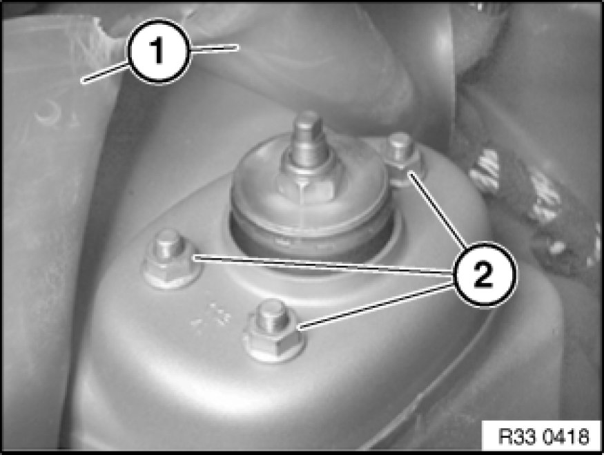
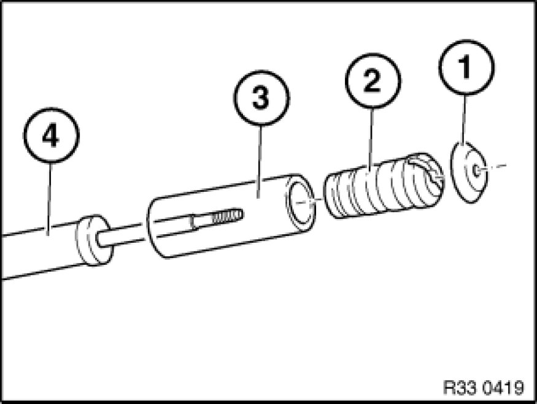

Removing and Installing/Replacing Rear Left or Right Shock Absorber
33 52 000 - Removing and installing / replacing rear left or right shock absorber

Note:
Read and comply with Information on replacing shock absorbers Information on Replacing Shock Absorbers.
Necessary preliminary tasks:
- Remove rear wheel Removing or Installing Front or Rear Wheel
- Remove luggage compartment panel on left and/or right

Warning!
Danger of injury!
Failure to comply with the following instructions may result in the vehicle slipping off the lifting platform and critically injuring other persons.
When supporting components, make sure that
- the vehicle can no longer be raised or lowered
- the vehicle does not lift off the locating plates on the lifting platform

Support trailing arm with a workshop jack (1).
Release screw.
Installation:
Thrust washer (2) on rubber bearing must point to screw head.
Tighten bolt in normal position Moving Vehicle Into Normal Position.
Tightening torque, 33 52 1AZ Shock Absorbers (Rear).

Open and secure anti-drumming lining (1) in area of support bearing.
Unscrew nuts (2).
Remove shock absorber with support bearing towards bottom.
Installation:
Replace self-locking nuts.
Tightening torque 33 52 3AZ Shock Absorbers (Rear).

Replacement:
Remove support bearing Replacing Rear Left or Right Thrust Bearing for Spring Strut/Shock Absorber.
Remove or detach plate (1), auxiliary damper (2) and protective tube (3) from shock absorber (4).
Installation:
Check auxiliary damper (2) and protective tube (3) for damage, replace if necessary.
After installation:
- Check that output shaft is correctly seated in rear differential.